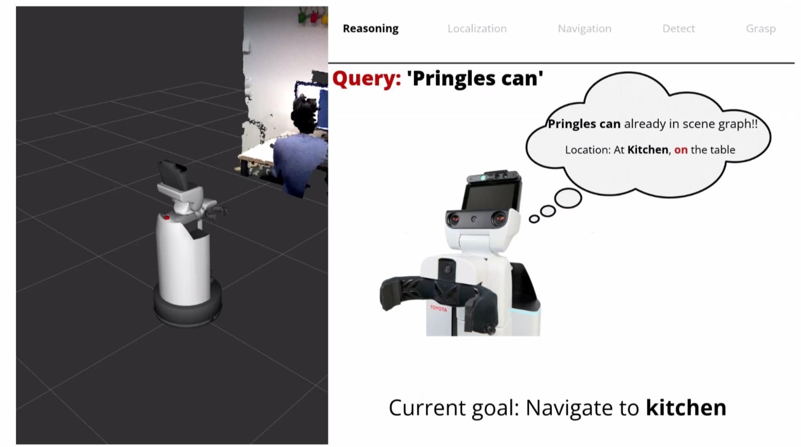
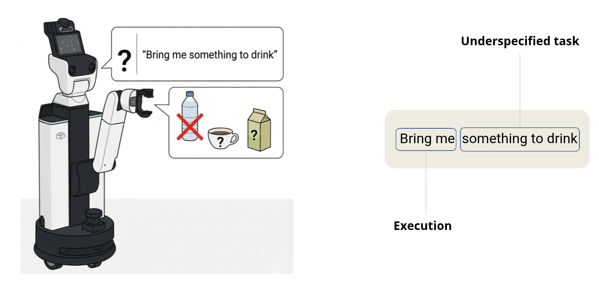

2026
Evidential Learning of Semantic Scene Graphs for Pepper Plants
Bonner Informatik Group Best Thesis Award · SG-DOR, IROS 2026.
I teach robotics through lectures, research supervision and hands-on systems work. My focus is to connect probabilistic reasoning and modern perception with implementation on real robots.
Redesigned the manipulation and perception lectures, exercises and assessments. Introduced current perception pipelines and semantic mapping; conducted oral and written examinations and managed grading.
Stand-in lecturer and teaching assistant for probabilistic robotics. Designed assignments and examinations, supervised programming work and managed grading.
Graded Reinforcement Learning tutorials at the University of Bremen and organized a one-day MATLAB workshop for undergraduate engineering students at SPCE.
I have supervised five completed MSc theses at the University of Bonn, resulting in two full conference papers and one workshop paper. Two theses received awards in 2026.
Bonner Informatik Group Best Thesis Award · SG-DOR, IROS 2026.
Grace Hopper Thesis Award · IROS 2025 workshop paper.
Humanoids 2023.
ICRA 2026 workshop paper · extended paper at IROS 2026.
IROS 2025.

Using active perception to acquire task-relevant observations before executing open-vocabulary manipulation commands.
Course page
Grounding flexible natural-language commands into robot-specific perception, planning and manipulation capabilities.
Course pageVision-based handle detection and whole-body motion for opening drawers, doors and cabinets with mobile and humanoid robots.
Course pageTranslating everyday language into perception, planning and pick-and-place actions on an omnidirectional mobile manipulator.
Course pageA human–robot interaction project built around the Rock–Paper–Scissors game.
Supervised more than 10 seminar projects covering active perception, manipulation and scene understanding, including research-proposal development and presentation preparation.
Current seminar pageI currently mentor three junior PhD students at the Humanoid Robots Lab working on interactive perception and manipulation.